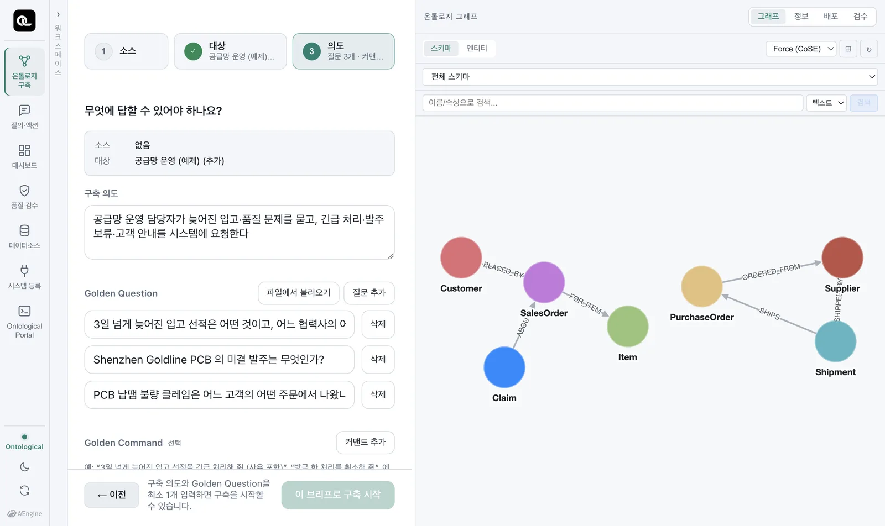
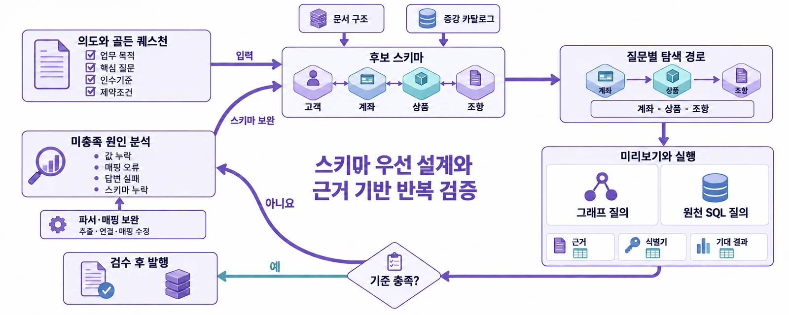

온톨로지를 만들기 전에 먼저 정하는 두 가지 — 이 온톨로지가 답해야 할 질문과 해야 할 일. 구축 에이전트는 이것을 기준으로 설계하고, 끝나면 이것으로 검증합니다.
무엇을 위한 온톨로지인가#
온톨로지에 모든 정보를 담으려 하면 구축 범위가 지나치게 넓어집니다. 그래서 Ontological Studio는 구축을 시작하기 전에 세 가지를 적게 합니다.
| 항목 | 질문 | 예제 「공급망 운영」 |
|---|---|---|
| 구축 의도 | 누가, 무엇을 하려고 쓰나? | 공급망 운영 담당자가 늦어진 입고·품질 문제를 묻고, 긴급 처리·발주 보류·고객 안내를 시스템에 요청한다 |
| 골든 퀘스천 (Golden Question) | 이 온톨로지로 반드시 답해야 할 질문 | 3일 넘게 늦어진 입고 선적은 어떤 것이고, 어느 협력사의 어느 발주 건인가? |
| 골든 커맨드 (Golden Command) | 이 온톨로지로 반드시 할 수 있어야 할 지시 | 3일 넘게 늦어진 입고 선적을 긴급 처리해 줘 (사유: 생산 차질 우려) |

예제 브리프는 어디서 보나요?
「온톨로지 구축」의 대상 선택에서 「공급망 운영 (예제) (추가 인제스천)」을 고르면 의도 단계에 예제 브리프(골든 퀘스천 3개, 골든 커맨드 4개)가 채워져 보입니다. 「새 온톨로지」를 고르면 빈 브리프에서 시작합니다.
골든 퀘스천 — 설계의 출발점, 완성의 기준#
골든 퀘스천은 소프트웨어 공학의 인수 기준(acceptance criteria)과 같습니다.
- 설계할 때 — 에이전트는 질문에서 거꾸로 필요한 것을 찾습니다. “어느 협력사의 어느 발주”라는 말에서
Shipment,PurchaseOrder,Supplier클래스와 그 사이의 관계가 필요하다는 것을 압니다. 이것을 스키마 우선 설계라고 합니다. - 검증할 때 — 구축이 끝나면 에이전트가 골든 퀘스천을 직접 실행해, 기대한 답과 근거가 나오는지 확인합니다. 안 나오면 스키마나 매핑을 고쳐 다시 실행합니다.
- 쓸 때 — 질의 화면과 온톨로지 앱에 예시 질문으로 붙습니다.

좋은 골든 퀘스천 쓰기#
| 덜 좋은 예 | 더 좋은 예 | 이유 |
|---|---|---|
| 협력사 정보를 알려 줘 | Shenzhen Goldline PCB의 미결 발주는 무엇인가? | 대상과 조건이 구체적이어야 검증할 수 있습니다 |
| 품질이 어때? | PCB 납땜 불량 클레임은 어느 고객의 어떤 주문에서 나왔나? | 답의 모양(고객, 주문)이 정해져 있습니다 |
| 선적, 발주, 협력사 | 3일 넘게 늦어진 입고 선적은 어떤 것이고, 어느 협력사의 어느 발주 건인가? | 여러 관계를 따라가는 질문으로 필요한 스키마 경로를 확인합니다 |
- 실제 업무 담당자가 입으로 하는 질문으로 씁니다.
- 한 개의 관계로 끝나는 질문만 있으면 스키마가 얕아집니다. 두세 관계를 거치는 질문을 섞으세요.
- 답이 하나로 정해지는 질문이 좋습니다. 검증이 쉬워집니다.
골든 커맨드 — 액션 설계의 출발점#
골든 커맨드는 행위에 대한 인수 기준입니다. 구축 에이전트는 골든 커맨드마다:
- 등록된 업무 시스템의 API(OpenAPI 스펙)를 살펴 이 지시를 실행할 API를 찾고,
- 그 일을 되돌릴 API(보상)를 짝짓고,
- 누가 어떤 대상에 쓸 수 있는지 정책을 붙여 액션을 만들고,
- 실제로 실행하지 않고 계획만 세워 보는 드라이런으로 검증합니다.
예제의 골든 커맨드 네 개와 그로부터 만들어진 액션:
| 골든 커맨드 | 액션 | 실행 (보상) |
|---|---|---|
| 3일 넘게 늦어진 입고 선적을 긴급 처리해 줘 (사유: 생산 차질 우려) | Shipment.expediteShipment |
WMS 우선순위 URGENT (이전 값으로) → ERP 납기 독촉 (철회) |
| Shenzhen Goldline PCB의 미결 발주를 모두 보류해 줘 (사유: PCB 납땜 불량 조사) | PurchaseOrder.holdPurchaseOrder |
ERP 발주 보류 (해제) |
| PCB 납땜 불량 클레임을 낸 고객에게 조치 안내를 보내 줘 | Customer.notifyCustomer |
CRM 안내 발송 (철회) |
| 방금 한 처리를 취소해 줘 | (별도 액션 없음) | 위 액션들의 보상 흐름으로 충족 |
마지막 줄의 “취소” 커맨드는 새 액션을 만들지 않습니다. 기존 액션에 정의된 보상을 사용하기 때문입니다.
좋은 골든 커맨드 쓰기#
- 대상을 고르는 조건을 담습니다: “3일 넘게 늦어진”, “Shenzhen Goldline PCB의 미결”.
- 사유를 함께 씁니다. 실행 기록과 업무 시스템에 남습니다.
- 되돌리는 지시(“방금 한 처리를 취소해 줘”)도 하나 넣어 두면, 에이전트가 보상까지 검증합니다.
두 개념을 한 장으로#
| 골든 퀘스천 | 골든 커맨드 | |
|---|---|---|
| 묻는 것 | 무엇에 답해야 하나 | 무엇을 해야 하나 |
| 만드는 것 | 클래스·관계·속성(스키마), 인스턴스 | 액션(단계·보상·정책) |
| 재료 | 문서, 데이터소스 | 등록된 업무 시스템의 API |
| 검증 | 질문을 실행해 답과 근거 확인 | 드라이런으로 계획·정책 확인 |
| 앱에서 | 대시보드·코드 앱이 무엇을 보여 줄지 | 앱의 버튼이 무엇을 할 수 있을지 |
확인 문제
여러분 학과의 수강 신청 시스템을 온톨로지로 만든다고 생각해 봅시다.
- 구축 의도를 한 문장으로 써 보세요.
- 골든 퀘스천 세 개를 써 보세요. 적어도 하나는 두 개 이상의 관계를 거쳐야 합니다.
- 골든 커맨드 두 개를 쓰고, 각각을 되돌리는 방법을 적어 보세요.
예시 답안
- 학과 조교가 수강 현황과 정원 문제를 묻고, 대기자 승급과 분반 안내를 학사 시스템에 요청한다.
- 「데이터베이스」 과목의 분반별 신청 인원과 정원은? / 정원을 넘긴 분반을 신청한 학생 중 졸업 예정자는 누구인가? / 김교수가 담당하는 과목 중 강의실 수용 인원보다 신청자가 많은 것은?
- “정원이 남은 분반의 대기자 1순위를 승급해 줘” — 보상: 승급 취소(대기 1순위로 되돌림). “폐강 과목 신청자에게 안내 메일을 보내 줘” — 보상: 안내 철회 메일.